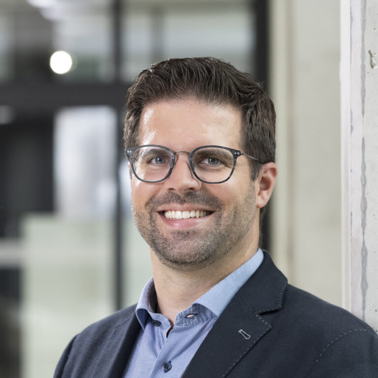
Christoph Grün
Founder & CEO
SensoSphere technology, partnerships and strategy.
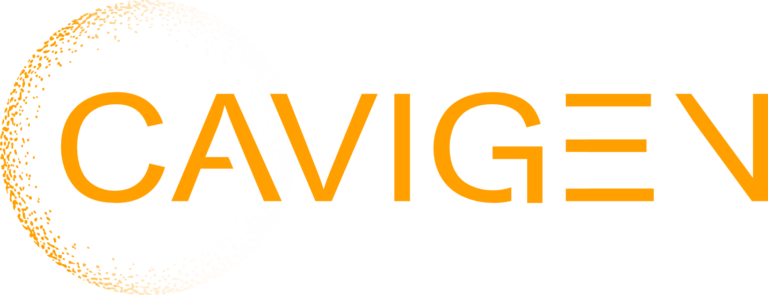
Let’s talkWe are CAVIGEN. Founded in 2024 as a KIT spin-off, we turn research in 3D cell culture into tools for your lab.
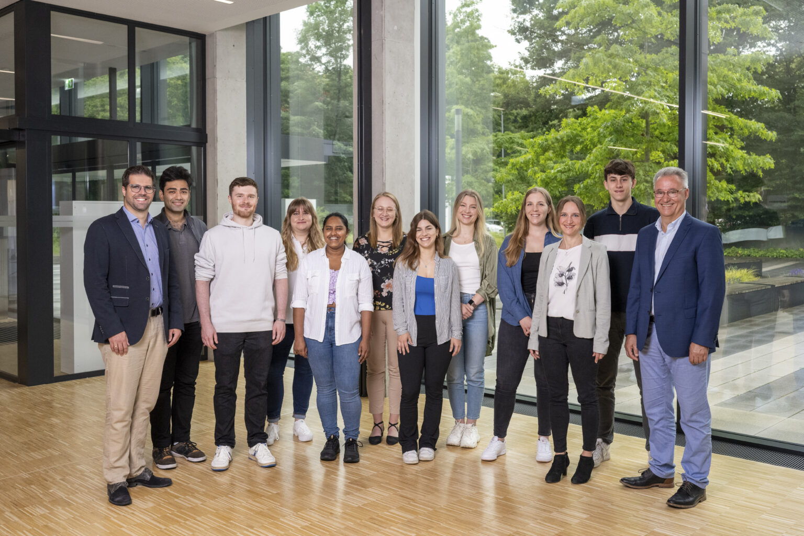
More realistic models start with the environment around your cells. CaviSphere brings defined 3D culture, exchange and local oxygen measurement into your experiments.
Our work connects microstructured materials with cell biology — and your research question with a practical starting point.
Meet the platform ↗Founded in 2024 as a KIT spin-off. Bringing 3D cell culture, sensor technology and application support together.

Founder & CEO
SensoSphere technology, partnerships and strategy.
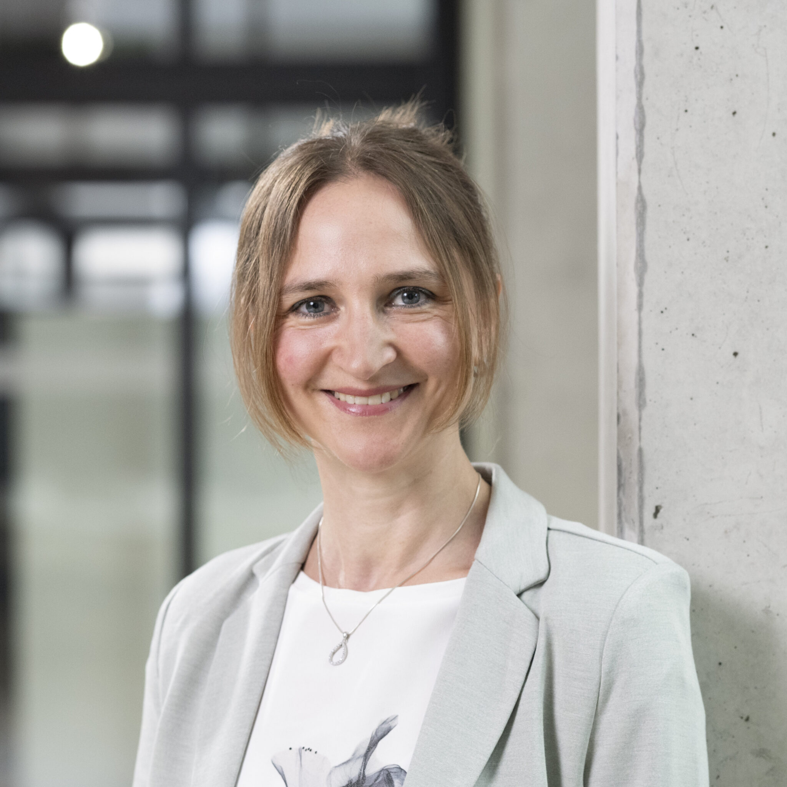
Founder & Customer Experience Manager
3D cell culture, application support and customer onboarding.
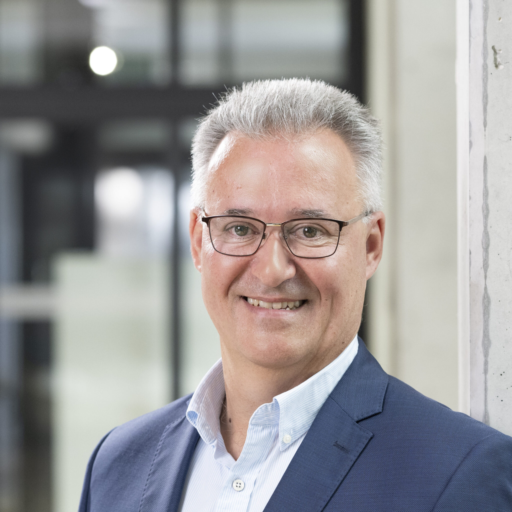
Founder & Scientific Advisor
More than 25 years of experience in 3D cell culture and microthermoforming.
Milestones on our path from research to application.
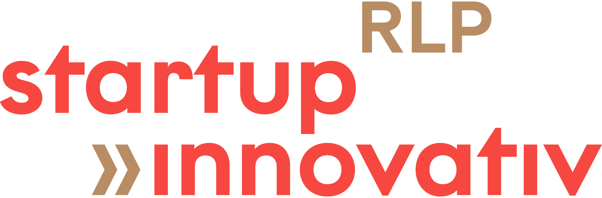
Winner · 2026
One of five start-ups selected by Rhineland-Palatinate to receive funding for an innovative business model.
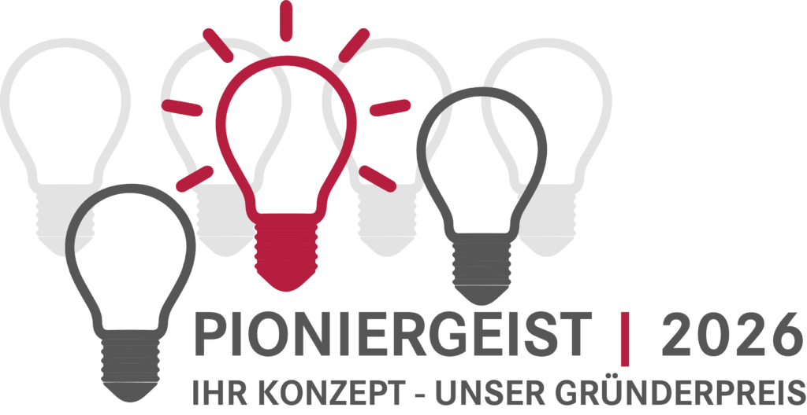
3rd place · 2026
Recognised in the Rhineland-Palatinate start-up competition for turning 3D cell culture research into a business.
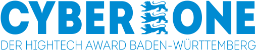
2nd place · 2024
Awarded in the Life Science & MedTech category of Baden-Württemberg’s high-tech start-up competition.
1st place · 2024
First place at the Stuttgart competition — an early milestone on the journey from research to company.
Selected innovator
Selected for Tech4Change, bringing the CaviSphere platform to an international technology and innovation audience.
Public programmes and investment have helped the technology and the company develop.
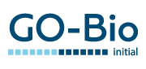
Early-stage support for translating life science research into applications.
Learn more ↗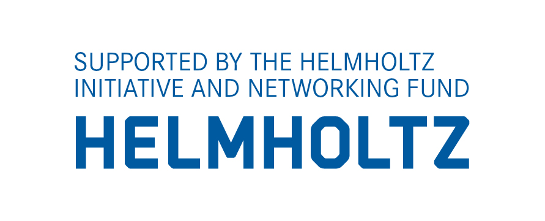
Support for the transition from a research idea to a spin-off.
Learn more ↗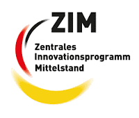
Collaborative research and development contributed to the technology’s development.
Learn more ↗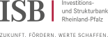
Investment announced in 2026 supports production and market entry. The financing includes the EU-cofinanced Innovationsfonds Rheinland-Pfalz III.
Learn more ↗Scientific roots, early applications and a network that brings people together.
Our scientific origin and technology licensing partner.
Explore KIT ↗Early CaviSphere pilot projects connect us with Mannheim, Heidelberg and Freiburg. BioRN and 5-HT connect us with the wider life science and innovation community.
Academic & clinical research
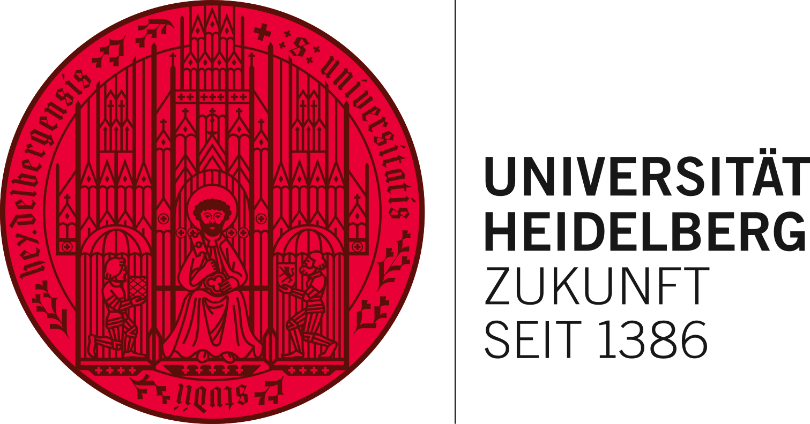
Academic research
Academic research
Life science network
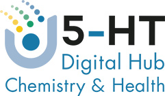
Chemistry & health network
5-HT logo: NatalieElea · CC BY-SA 4.0 · unchanged.
Tell us about your cells, your setup and the question you want to answer.
Request trial inserts